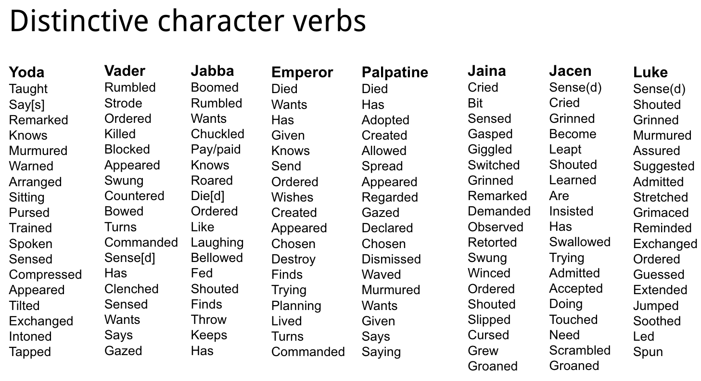
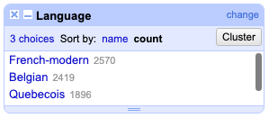

DSC Multilingual Mystery #5: Lee & Quinn and the Mystery in the French NLP Model#
By Lee Skallerup-Bessette and Quinn Dombrowski
January 6, 2023
N.B. We wrote most of this in early 2022 but it took us a year to wrap things up and publish it because that’s how 2022 went for both of us.
Quinn (2021)#
It was a few days after Christmas. Omicron was sending the daily case-rate vertical, making us nostalgic for the days of DSC Multilingual Mystery 2, when we worked through how to scrape websites, and our example of Wikipedia noted only 777,000 confirmed cases of COVID to date. At the current rate of over 480,000 reported cases per day in the United States, we’d reach that number anew by tomorrow. Lee and I were facing virtual instruction immediately after the new year, and whether you have teenagers or small kids, the holidays have a way of being exhausting.
We needed some fun. We needed some Data-Sitters Club.
We had some ideas – a specialist in the Quebecois translation of the Baby-Sitters Club had reached out to Lee, but in the wake of everything in 2021, we hadn’t followed up. But it was better for a future book: there was no way we could schedule, conduct, and write-up an interview in the handful of days before January 2022 hit. I thought about the code I’d written for other projects in 2021, and there was one bit I was rather proud of: something that used the spaCy NLP dependency parse to identify subjects and verbs. (If “dependency parse” doesn’t ring a bell, think the sentence diagramming you might’ve done in school – breaking down a sentence into nouns, pronouns, adjectives, adverbs, etc. and indicating the relationships between them: subjects, objects, and the like.)
Long story short: we can use this method to do things like identify which verbs are distinctive for particular characters – which verbs occur far more often with a given character than all the other characters. Here’s what this looked like for a project on Star Wars novels I did with Matt Warner, Nichole Nomura, and Associate Data-Sitter Mark Algee-Hewitt:

If you’re into Star Wars, this should strike a chord.
When you’re working with computational methods at a scale larger than what you’d be comfortable doing manually, you may feel the ping of doubt in the back of your mind. How do you know that it’s catching everything? Or even most things? Or at least enough things? “Enough” matters with code like this, where you can only easily look at character names. There are other tools that do what’s called coreference resolution: taking the pronouns (e.g. “I”, “she”) and linking them with the characters they refer to. That’s really important: character names get used a lot less frequently than pronouns. But it turns out that’s also really hard to do well. There’s a tool called BookNLP that David Bamman developed that does a relatively great job at it (even more so in its recent, still-under-development version), and he’s working on versions for other languages as well. Until coreference resolution is part of the workflow, though, working with only character names means you’re limited to a much smaller data set than you’d ideally like to have. So you want what little data you have – sentences where a character name is the subject – to at least mostly get picked up correctly. You can (and should!) hand-check a sample of the results: are you getting what you expect? But we had another route, because we were working with multiple French translations: we could compare how many subject/verb pairs were found in each translation, along with how many were in the original English.
It wasn’t much of a research question, but as Lee and I exchanged texts that December night, we settled on, “What’s the deal with subject/verb pairs in the French translations? Anything interesting there?”
Lee#
July 2022#
Ann M. Martin cared deeply about temporality (or lack thereof) in the series, as revealed in her archives. We, The Data-Sitters Club, care much less. While this started in (OH GOD I HATE HOW TIME WORKS) December, it’s now almost July, and I’m finally getting around to revisiting this.
January 2023#
And now it’s (checks calendar) TWENTY-TWENTY-THREE. These books have ebbed and flowed from our personal and political circumstances. Sometimes, we needed a distraction, and other times, we didn’t even have the energy or bandwidth for a distraction, no matter how enjoyable.
All of this to say, I have literally no memory of why I thought this would be interesting, other than ANYTHING was more interesting than what I was trying to (not) deal with and process. Maybe there was something soothing about counting things and comparing them in neat rows and columns, and being able to say, look, we did a thing! Plus, any reason to be reminded about the Bescherelle, every Quebec kid’s bible for our entire schooling. I still have mine.
Quinn (2021)#
We’ve covered spaCy before in DSC M2: Beware, Lee and Quinn. Thankfully, its named-entity recognition for French has improved since we wrote that book in February 2020! One of the things I continue to love about it, though, is that if you write code for pulling out something cross-linguistically applicable, it’s really easy to run it on multiple languages just by switching the language model you’re using.
I took the French books we used when looking for Spaghetti-O’s with Isabelle earlier this year, a set of six: books 1, 2, 3, 4, 5, and 16, which we had in the Quebecois, Belgian, and modern French translations, and ran them through the code I’d written for the Star Wars project, lightly adapted for French. The output is a TSV (tab-separated value; like the more common CSV for tabular data, but less likely to be tripped up by a stray comma in your text) file with the filenames, subjects, and verbs for each file in the directory.
Finding characters’ verbs#
Installing spaCy & importing libraries#
If you don’t have spaCy installed yet, this first code block takes care of that; just remove the # before the last line. Then we need to use it to download the right SpaCy language model, and also import a few other Python libraries.
#Use this to install spaCy using pip
import sys
#Runs the command to install spaCy for your Jupyter notebook
!{sys.executable} -m pip install spacy
#Replace fr_core_news_sm or en_core_web_sm with another model name here for other languages
!{sys.executable} -m spacy download fr_core_news_sm
!{sys.executable} -m spacy download en_core_web_sm
# os is used for navigating directories
import os
# spacy is used for identifying the subjects and verbs
import spacy
#Replace the models with another model name here for other languages
import fr_core_news_sm
import en_core_web_sm
#Replace the models with another model name here for other languages
frnlp = spacy.load("fr_core_news_sm")
ennlp = spacy.load("en_core_web_sm")
Selecting the directory & output file#
You can edit the code cell below to put in the full path to the directory/folder with the text files (.txt) you want to work with.
Here’s the syntax to specify the full path to a folder called YOUR-FOLDER within the Documents directory:
On Mac: ‘/Users/YOUR-USER-NAME/Documents/YOUR-FOLDER’
On Windows: ‘C:\Users\YOUR-USER-NAME\Documents\YOUR-FOLDER’
directory = '/Users/qad/Documents/dsc/dsc_fr_verbs'
#Changes the notebook's working directory to the directory you specified
os.chdir(directory)
Next, put in a full path and name for the file you want to use to collect your results.
charverbfile = '/Users/qad/Documents/dsc/dsc-french-verbs.tsv'
Find the subjects#
The code cells below reads each text file in the directory, finds every subject and verb, and writes it to a CSV file along with the filename it’s from. The files are processed alphabetically, so that if something breaks (e.g. text files bigger than 1 MB may trigger a memory error), you can figure out what files are left to be done.
By default, the CSV file is called charverbs.csv and gets created inside the directory with the text files. You can give the file a different name in the code cell below, but keeping .csv is recommended.
Doing the NLP parse can be time-consuming, particularly if you have a large number of files. If your text is on the scale of hundreds of novels, expect it to take hours.
#Opens the output file
with open(charverbfile, 'w') as out:
out.write('Filename\tSubject\tVerb\n')
#Sorts the files alphabetically
for filename in sorted(os.listdir(directory)):
#Looks for .txt files
if filename.endswith('.txt'):
#Opens each file
with open(filename, 'r') as bookfile:
#Reads in the text in the file
book = bookfile.read()
#NLP parse of the text
doc = frnlp(book)
#Noun chunks are the part of the SpaCy dependency parse that we need
for chunk in doc.noun_chunks:
#If the dependency relation is 'nsubj' (noun subject)
if chunk.root.dep_ == 'nsubj':
#Write the filename, the noun chunk, the verb, and then a newline character
strsubj = str(chunk.text)
cleansubj = strsubj.replace(',', '')
out.write(filename + '\t' + cleansubj + '\t' + chunk.root.head.text + '\n')
I did the same, then, for the English versions of those same novels:
endirectory = '/Users/qad/Documents/dsc/dsc_en_verbs'
#Changes the notebook's working directory to the directory you specified
os.chdir(endirectory)
encharverbfile = '/Users/qad/Documents/dsc/dsc-en-verbs.tsv'
#Opens the output file
with open(encharverbfile, 'w') as out:
out.write('Filename\tSubject\tVerb\n')
#Sorts the files alphabetically
for filename in sorted(os.listdir(endirectory)):
#Looks for .txt files
if filename.endswith('.txt'):
#Opens each file
with open(filename, 'r') as bookfile:
#Reads in the text in the file
book = bookfile.read()
#NLP parse of the text
doc = ennlp(book)
#Noun chunks are the part of the SpaCy dependency parse that we need
for chunk in doc.noun_chunks:
#If the dependency relation is 'nsubj' (noun subject)
if chunk.root.dep_ == 'nsubj':
#Write the filename, the noun chunk, the verb, and then a newline character
strsubj = str(chunk.text)
cleansubj = strsubj.replace(',', '')
out.write(filename + '\t' + cleansubj + '\t' + chunk.root.head.text + '\n')
The clue in the file size#
You know it’s bad news when you’re looking at three translations of six books (our French data), and the output file is about the same size as the original text of those same books (our English data). (Want to see the output files? Check out our GitHub repo for this book.) File size can be an early indicator of things having gone off the rails. When you’re looking at plain text files, the file size is directly connected to the amount of text in the file – unlike Word docs, where you can have two files that are the same size, but one might have a hundred pages of text and the other might have a large image. Without even looking at the contents of the text files, if they’re the same size, they have roughly the same amount of text (and punctuation, and spaces, etc.). What’s more, these two text files were produced by the same code, using similar text files (a set of novels and their translations). Sure, French verbs and pronouns are different lengths than their English equivalents (e.g. je/j’ vs. I), but we’re not stressing the details, we’re looking for scale. If the input for our English file was one copy of each novel, and the input for our French file was three copies of each novel (Belgian, Quebecois, and modern French), we’d expect the French file to be roughly 3x the size of the English file if the French spaCy model and the English spaCy model were equally effective at pulling out subject/verb pairs. 😬 So… what happened with ⅔ of those subject-verb pairs that should be there?
Reliably unreliable results#
It was time to debug.
I pulled the French TSV file into OpenRefine, and used the “Text filter” option on the “BookNo” column to isolate all the texts from a certain translation (based on the filename suffix: “_qu.txt”, “_bg.txt”, or “_frmod.txt”) or a certain text (based on the filename component “001”, “002”, etc.), and added columns (‘Edit columns’ –> ‘Add column based on this column’) so that each subject/verb pair also had a column with the translation and the book number.

From here, I went to the BookNo column and chose Filter → Text Facet. This added a filter on the left to select each of the books in turn. After I chose a book, I did Filter → Text Facet again on the Language column, and sorted that on count.

One after another, I checked the books, and every time it worked out the same: the modern French translation had the most identified subject/verb pairs, followed by Belgian, followed (at a non-trivial distance) by Quebecois.
I compared this to English (where I could just use the Filter → Text Facet by filename, because there was only one language at play), and the results were shocking: book 3, The Truth About Stacey, had 4,498 subject/verb pairs identified, meaning that even in the modern French translation, the spaCy NLP French model was only pulling out 57% of the verbs that the spaCy NLP English model was pulling out. For Quebecois, it was only 42%!
Ouch. I had to text Lee about this.
Q: First finding: the French spaCy model seems not to be great at identifying subjects and verbs in sentences. 4057 verbs in English in BSC1 vs. 1690-2574 depending on the French translation.
L: Clearly the algorithm wasn’t taught by a French teacher. It would know its f*cking verbs. 🤣🤣🤣
Q: Right?! I’m going to make it diagram some sentences and tell me WTF it’s thinking.
L: Like, my entire schooling in French was just about conjugating verbs and identifying the parts of sentences.
Q: spaCy needs to go back to French school.
L: Can you just upload a Bescherelle?

Clearly something was up with the French model. It was consistently performing better on the French-from-France translation than the Belgian, and especially the Quebec. This seemed odd: in DSCM4, we’d discovered that the French translation was actually a modified version of the Belgian translation. And we’d also discovered a large number of changes between the 1990’s French translations and the recent re-releases – but they didn’t update content (like we’d found in some of the English re-releases), they changed the grammar.
When we ran this by Cécile Alduy, my department chair, she explained that they changed more complex and formal grammatical forms to simpler and more colloquial equivalents that would be more familiar to children today:
It’s actually super interesting stylistically! Basically, all the edits are “modernization” that brings down the level of grammatical and stylistic sophistication. He version from the 90s is very literary, with past simple tense, inversion verb-subject… The new version is much simpler grammatically, which corresponds (sadly) to the drop in the level of grammatical fluency that young French middle schoolers have to learn. My daughter is in 6th grade and they are not even yet doing the passé simple, and only a few persons. When I was a kid, we would do all the tenses and modes (including some subjunctive) by the end of 5th grade.
Our curiosity piqued, we ran the code again on the older versions of the French translation, and found that the older French translation consistently performed worse than the newer French translation, but better than the Belgian it was based on, or the Quebecois:

We have fewer older French translations, so we limited the results here to just the books where all the translations are represented, to not give the impression that older French performed worse overall due to our smaller corpus of that translation.)
Is it the characters?#
Using the translations pages on the Baby-Sitters Club fandom wiki (some of which I’d created myself) to refresh my memory of how the character names had been adapted, I settled on looking for Claudia, whose name was unchanged in Quebec and France. I used the “Text filter” on the “Subject” column to look for Claudia in the translations of BSC #1: Kristy’s Great Idea.

The original French translation had almost half the number of sentences with Claudia as the subject as the modern re-release. And the number of sentences in the Quebec translation halved that number. For comparison, the Belgian translation, which changed “Claudia” to “Julie”, had 49 sentences with that character as the subject, which sounded more impressive before I checked the original English version where Claudia shows up as the subject of 110 sentences. 😥
I put all the data into Tableau (with “Character” in the column – filtered to only include the members of the BSC, and “Language” and “BookNo” in the rows) to see what it looked like.

(In case you’re wondering about the weird drops in the character names in the English data between books – Kristy in book 1, Claudia in book 2, etc., it’s because that character serves as the first-person narrator.)
WTF was spaCy thinking?#
I wanted to go find some of the missing sentences and make spaCy show its work. If these characters weren’t the subjects, then what did it think they were?!
It was harder than I expected to find a sentence that was translated with the same grammatical structure across all the versions. I thought I found a good candidate with “Claudia adore les sucreries” (‘Claudia loves sweets’) from the Quebec BSC #4, but Belgian gave me “Julie est une mère-bonbons” (literally ‘Julie is a candy-mother’), which was adapted in France as “Claudia est folle des bonbons” (‘Claudia is crazy for candy’) Verb, noun, and adjective, all different ways of rendering “Claudia is a junk-food addict” into French! Then there were promising sentences, like “Claudia called Watson back” that just got omitted from the Belgian translation, an omission that then propagated to the French translations. “Claudia ignored the question” was looking good across the Belgian, Quebecois, and old French translations, but the recent French translation replaced her name with a pronoun. 🙄 Still, I decided this inconsistency might be a helpful point of contrast.
I ran each of these sentences through spaCy, and used the “Displacy” visualization to actually see the relationships between the words.
English gives us what we’d expect: “Claudia” is recognized as a proper noun (PROPN), and as the subject (nsubj) of the verb “ignored”.
doc = ennlp('Claudia ignored the question.')
from spacy import displacy
displacy.render(doc, style="dep")
Let’s try the modern French, which uses a pronoun:
doc = frnlp('Elle a ignoré la question.')
from spacy import displacy
displacy.render(doc, style="dep")
This should be, at least relatively speaking, “easy mode”: there’s no potential confusion around Claudia’s name. “Elle” is correctly identified as a pronoun, and the subject of the verb “ignoré”.
Now for the older French version, “Claudia ignora la question.”:
doc = frnlp('Claudia ignora la question.')
from spacy import displacy
displacy.render(doc, style="dep")
Here, Claudia is being treated as an adjective, and the verb “ignora” is also treated as an adjective. The relationship between them is labeled “acl”, the “clausal modifier of a noun”, which is odd because these are both adjectives. 🤨
You’d expect the same thing for the Belgian sentence, since it just substitutes “Julie” for “Claudia”.
doc = frnlp('Julie ignora la question.')
from spacy import displacy
displacy.render(doc, style="dep")
Except this time, spaCy at least recognizes “Julie” as a noun (instead of an adjective), and the “acl” relationship is less inherently absurd, if still completely wrong.
Quebecois gives us a different grammatical construction:
doc = frnlp('Claudia ne répond pas.')
from spacy import displacy
displacy.render(doc, style="dep")
Here, spaCy has concluded that Claudia is an adjective, and furthermore, has nothing to do with the rest of the sentence. On the upside, it does get the negation right: according to the Universal Dependency syntactic annotation rules (which are ubiquitous for annotating corpora to train NLP models) verbal negation like this is treated as an adverb modifying the verb. So, A+ for figuring out the negated verb, but F for sorting out the subject.
Localizing names for NLP#
Still, the difference between “Julie” and “Claudia” got me thinking: how much of the problem here is Claudia? I replaced “Claudia” with “Julie” in the Quebecois sentence and tried again:
doc = frnlp('Julie ne répond pas.')
from spacy import displacy
displacy.render(doc, style="dep")
Lo and behold, it got the whole sentence right: “Julie” is identified as a proper noun, and the subject of the verb, which is correctly modified by negators.
Clearly, “Julie” didn’t do the trick in all cases – it was recognized as a noun, not a proper noun, in the Belgian sentence, and wasn’t identified as the subject of the verb. But what if I went for an even more screamingly French name?
doc = frnlp('Cosette ignora la question.')
from spacy import displacy
displacy.render(doc, style="dep")
Voilà!
This was starting to remind me of something else from the Literary Lab’s Star Wars project: BookNLP was struggling with coreference resolution and name clustering, and so Matt found a list of the most common English names, and replaced every Star Wars character name with a name from the list (e.g. “Leia” became “Mary”.) He also used English professional titles (e.g. Dr.) to substitute for Star Wars titles like “Darth”. How much would our results improve if we did the same here?
Working with a few different name lists, I went through options until I found five that spaCy picked up as proper names using the Belgian sentence above, where I first swapped in “Cosette”, then did a simple find-and-replace in the text files to make the changes.
Original name |
Belgian name |
Quebec name |
French NLP name |
|---|---|---|---|
Kristy |
Valérie |
Christine |
Genevieve |
Mary Anne |
Mélanie |
Anne-Marie |
Avriel |
Claudia |
Julie |
Claudia |
Cosette |
Stacey (Lucy in France) |
Sophie |
Sophie |
Adélaïde |
Dawn (Carla in France) |
Carole |
Diane |
Fayette |
With a new set of files detailing the adventures of this Club des Baby-Sitters made up of Genevieve, Avriel, Cosette, Adélaïde, and Fayette, I reran the French subject/verb code, hoping to see the number of subject/verb pairs with the BSC members as the subjects go up substantially.
But the results were mixed; Mary Anne fared markedly worse as Avriel, even though Claudia fared much better as Cosette. Kristy lost results across the board as Genevieve; Stacey gained some as Adélaïde, but only in Belgian and Quebecois. Dawn did better as Fayette in Belgian, but otherwise lost a few or stayed the same.

Changing the names had a surprising effect on the discrepancies in identified subject/verb pairs between the translations. With the original names, and a corpus limited to the books we had in all four translations, spaCy was able to pick up subject/verb pairs with the main character as the subject a little bit better for Belgian than older French, but modern French still had an advantage. The new names closed the gap between Belgian and modern French, and led to an increase in identified pairs in Quebecois; in short, Claudia’s and Stacey’s gains made up for losses elsewhere.


Still, it’s clear that the grammar used in the Quebecois translation in particular doesn’t align well with what the spaCy French model was trained on, namely the Universal Dependencies French-Sequoia treebank. If you dig into the details, you’ll find that the sentences in this corpus come from French Europarl, French Wikipedia, the newspaper Est Républicain (from France), and European Medicines Agency. Are those the only data sources you imagined being the basis of the “French” NLP model? What does it mean for our project – and for yours – when that’s the only French text that the model has seen?
Lee (2022)#
When I was working at Morehead State, I was asked to cover for a sabbatical and teach an intro level French course. I had grown up learning French in Quebec, and while I knew that the French (from France) looked down their noses at the Québéois accent, it didn’t occur to me that the French itself was that much different save for some localized colloquialisms. Given how much the grammar was driven into our heads while we were learning the language, I figured, well, we’re learning French with a different accent, nothing more, nothing less. We all used the same dictionaries (Petit Robert, Bescherelle) after all.
LOL.
Anyway, the French-language textbook I was assigned to use was (of course) from France, and the differences were SHOCKING. Not only were there SO MANY words and phrases that I just didn’t know/had never used, the students struggled with the “écoute” (listening) parts because it was all French from France. More shockingly (or, really, not all that shocking) the book paid dismissive lip service to the French spoken in the wider francophonie, never even mentioning Quebec, nor any of the very distinct French dialects, such as Haitian Creole.
And I should have known better, as well, because of an earlier experience in university. U de Sherbrooke often attracted students from across the French diaspora, including our Acadian cousins from New Brunswick (the only officially bilingual province in Canada). One day, we were hanging out with one of them, one Anglophone and one Francophone and one Acadian. Neither the Francophone nor myself could understand a single thing the Acadian was saying once he got going.
What’s fascinating about Quinn’s findings are that Quebec has long asserted that Quebec French is a…purer form of French than what is now spoken in France, given the French’s relatively lax attitude towards expanding the language to absorb les anglicisms (which is a dirty word in Quebec). I’m not familiar enough with the French dialect from Belgium (for example, how much Flemish influence is there, or not?), but it could be that the influence of English (and other languages) on French (from France) and Quebec’s resistance to those same influences is part of the reason behind these discrepancies.
As for names…what is a French name? This is actually a more complicated question, given France and Quebec’s various attitudes towards immigration, assimilation, nationalism, and even secularism. Most Gen-X Québécois were still being named after saints, and given that I went to an Anglo Catholic high school, most of my English friends had names that could be traced back to saints as well. That the model tripped up on names was really interesting to me, seeing as how I would have thought that the French (from France) model would be more inclusive of names from a variety of backgrounds that Quebec or Belgium, but it appears not to be the case.
Given that Quebec cares deeply about the French language and that there is a robust Francophone DH community in Montreal especially, I would think that there would be a Québécois language data set. This is another place where I particularly miss Stéfan Sinclair - his first large DH-ish project was an online French grammar checker, back when these tools were rudimentary at best, absolutely worthless at worst. I found the tool when I was teaching that French course in Appalachia, hoping to provide some more help to the students. The tool itself “learned” from common mistakes to give suggestions and flag errors that might otherwise be missed. Surely he would know of a local data set.
This is stating the obvious but French is not the same depending on where it is being spoken. This would be true of any language spoken in multiple different countries/contexts (this is where I wish there were multiple Spanish translations of the series as a point of comparison). Our data-sets and language models can and do recreate colonial and racialized biases in terms of what we populate them with when we make decisions on what is “French” (Or Spanish. Or Portuguese. Or…English.). The machine can only tell us so much about translations.
A large part of my dissertation was about the question of localized translation (as well as framing and reception). Temporality matters, context matters, audience matters. That you can have one poem that has been translated at least nine times in nine different ways is a reflection of that reality. This is why machine translation is a huge challenge. When I worked as an undergrad for the formerly giant telecommunications company Nortel as a technical writer and editor, part of my job was to flag documentation that was using non-Nortel standardized English phrases (there was a depressingly thin Nortel Standard English dictionary) with the goal of eventually being able to machine translate the documentation perfectly. If there was pushback from the writers, we had to submit the phrase for approval to be added to the dictionary, or they would come back with an approved phrase to use instead.
Poetry, technical manuals, YA series. It doesn’t matter because context will always matter when it comes to translation - dialect, register, colloquialisms, etc. What was a common French name might not be in 20 or 30 years. Translators are constantly updating their own language use, making these difficult decisions in each situation when they are translating, processing the changes happening around them. Models are but a snapshot of a language, even with a large sample size. The model’s ability to change and adapt is nothing compared to what translators can do.
Like many of our books, what we sought to learn wasn’t what we ended up learning, and really, this just reinforces what we already know, but maybe needed to be reminded of when it comes to distant reading; there are still some complex tasks that humans can do better and more efficiently than machines. Translation is one of them.
Quinn (2023)#
It feels like our French Multilingual Mysteries always end this way, with a sense of possibility mixed with a lack of resolution.
What’s the impact of the genre- and linguistically-limited data that the French NLP model is trained on? Fundamentally, it’s going to work less well for text that doesn’t look like what it’s seen before. Compare the French situation to English, trained on OntoNotes, which includes “telephone conversations, newswire, newsgroups, broadcast news, broadcast conversation, weblogs, religious texts”. Sure, it’s not trained on youth literature, but the rhetorical style you find in The Baby-Sitters Club has more overlap with that amalgamation of styles than only what you would find in newspapers and parliamentary proceedings.
And let’s not forget here that we’re talking about French! It’s a major global language, spoken in multiple wealthy countries. It’s got a lot going for it in the NLP development space! (Check out Xanda Schofield’s “The Possibilities and Limitations of Natural Language Processing for the Humanities” in The Bloomsbury Handbook of Digital Humanities for more on all that.)
Garbage in, garbage out …
I’ve been thinking about it even more lately, with the advent of ChatGPT, and the furor that has broken out on its impact on student essays (though Mark Marino has broken things down and the picture is, as always, more complicated). The Data-Sitters are looking to revisit the ghost in Anouk’s laptop sometime soon, and Lee’s interest in translation could make for some interesting prompt engineering. ChatGPT can handle, to varying extents, languages other than English; what if we gave it a passage from the original books, explained the localization strategy, and asked it to translate it into French? And then what if we took that text and ran it through something like the spaCy French NLP model?
But that’s a mystery for another day.
Suggested Citation#
Skallerup Bessette, Lee, and Quinn Dombrowski. “DSC Multilingual Mystery 5: Lee & Quinn and the Mystery in the French NLP Model”. January 6, 2023. https://datasittersclub.github.io/site/dscm5.html.